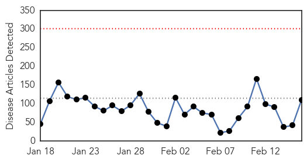
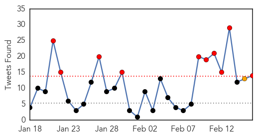

30 Day Trends
Web: 0 alerts, 0 warnings
Twitter: 10 alerts, 1 warnings
Top Articles:
- 0.999
- Report shows Davis Health was well-prepped for Ebola
- 0.999
- Ebola survivor brings message of understanding to Wayne State
- 0.999
- Ebola-Hit Nations Aim for No New Cases in 60 Days
- 0.999
- Ebola cases prompt mini-quarantine in Sierra Leone capital
- 0.998
- Still Fighting Ebola: A View from Liberia's Front Line
- 0.998
- San Diego Doctor Returns From Ebola Mission In Liberia
- 0.998
- American doctor exposed to Ebola to be monitored at an Omaha-area home
- 0.998
- Roundup: Chinese medical teams help to fight Ebola in Africa
- 0.998
- Chinese medical teams help to fight Ebola in Africa - Xinhua
- 0.998
- Second SA Ebola team to head to Sierra Leone
- 0.997
- Ebola survivor brings message of understanding to Wayne State
- 0.997
- Schools reopen as Liberia turns page on Ebola epidemic
- 0.996
- Schools reopen as Liberia turns page on Ebola epidemic
- 0.996
- Ebola crisis: Leaders of Guinea, Sierra Leone and Liberia pledge to eradicate virus 'within 60 days'
- 0.996
- UNDP administrator inspects Liberia over Ebola
- 0.996
- S. Africa dispatches more health workers to Ebola-affected countries
- 0.996
- S. Africa Sends 23 Health Workers to Treat Ebola in Sierra Leone
- 0.995
- Schools reopen as Liberia turns page on Ebola epidemic
- 0.995
- Kids go back to school in Liberia with strict anti-Ebola hygiene
- 0.994
- What Liberia needs from donors post-Ebola
- 0.994
- Schools reopen as Liberia turns page on Ebola epidemic
- 0.994
- Schools reopen in Ebola-hit Liberia
- 0.994
- Schools reopen as Liberia turns page on Ebola epidemic
- 0.994
- Schools reopen as Liberia turns page on Ebola epidemic
- 0.994
- Ebola outbreak: Liberia schools reopen after six months
- 0.994
- Ebola outbreak: Liberia schools reopen after six months
- 0.993
- Schools reopen as Liberia turns page on Ebola epidemic
- 0.993
- Schools reopen in Liberia after Ebola crisis
- 0.993
- Ebola expert warns the 'world must not drop its guard until the last case has been eradicated'
- 0.992
- Liberia schools reopen amid Ebola recovery
- 0.992
- Individual being monitored for Ebola in Omaha not showing any symptoms, officials say
- 0.992
- Schools reopen as Liberia turns page on Ebola epidemic
- 0.991
- Ventura doctor views Ebola-scarred Liberia as home
- 0.991
- Ebola in Scotland: Patient suspected of having deadly virus tests NEGATIVE at Edinburgh hospital
- 0.991
- Ebola in Scotland: Patient suspected of having deadly virus tests NEGATIVE at Edinburgh hospital
- 0.991
- Liberia schools reopen after 6-month Ebola closure
- 0.991
- Edinburgh patient tests negative for Ebola
- 0.989
- Liberia reopens schools after Ebola outbreak
- 0.988
- Kids go back to school in Liberia after Ebola closure
- 0.987
- Schools in Liberia Reopen After a Six-month Closure From Ebola
- 0.987
- S. Korean medics back to normal life after Ebola mission
- 0.987
- Liberia Schools Reopen After 6-Month Ebola Closure
- 0.987
- Guinea, Sierra Leone, Liberia target zero new Ebola cases in 60 days
- 0.986
- Liberian schools reopen after six-month closure during Ebola epidemic
- 0.986
- Liberian schools formally reopen after more than six months
- 0.984
- Mistrust, machetes thwart efforts to contain epidemic
- 0.984
- #Liberia schools reopen after six-month #Ebola closure
- 0.984
- Sierra Leone: UNDP Chief arrives in Sierra Leone for a three-day visit
- 0.983
- Ebola-hit nations pledge to eradicate virus in 60 days
- 0.981
- Liberian Schools Reopen After Six-Month Closure Due to Ebola
Showing top 50 articles...
Top Tweets:
- 0.985
- RT: Who's auditing NGO Ebola monies?! SL Gov see <5% of Ebola aid. "Sierra Leone Loses Track of Millions in Ebola Funds http:…
- 0.955
- Ebola Update: 22999 confirmed probable & suspected cases reported in 3 most affected countries with 9253 deaths. EbolaResponse
- 0.837
- Ebola-hit nations pledge to eradicate virus in 60 days - Daily Mail http://t.co/z9ew3ixKi5 ebola EVD
- 0.788
- RT: Latest Ebola No.s via past 3d. Total/deaths/lab confrmd change Guinea:+20/+20/+27 Liberia:+76/+42/+2 SierraLeone: …
- 0.744
- Ebola crisis: Leaders of Guinea Sierra Leone and Liberia pledge to eradicate ... - ABC Online http://t.co/D52VZwN4Ll ebola EVD
- 0.697
- Edinburgh patient tests negative for Ebola - BBC News http://t.co/ETYDlomqMZ ebola EVD
- 0.694
- Doctor who survived Ebola aims to improve disease treatment - WANE http://t.co/iUUof46saI ebola EVD
- 0.650
- San Diego Doctor Returns From Ebola Mission In Liberia - KPBS http://t.co/ljNPKd6Tp1 ebola EVD
- 0.636
- Doctor who survived Ebola aims to improve disease treatment - The Idaho Statesman http://t.co/qZ3QDrOXCI ebola EVD
- 0.606
- RT: Questioning NERC figures. Official Ebola figures suggest that 488 people recovered from the disease on the 14... http://t…
- 0.598
- [ABC] Ebola crisis: Leaders of Guinea Sierra Leone and Liberia pledge to eradicate virus 'within 60 days' http://t.co/MnXIRnbRM5 EBOLANEWS
- 0.582
- A third of Sierra Leone's Ebola budget unaccounted for says report - The Guardian http://t.co/9ROo9CEENR ebola EVD
- 0.536
- Rand Paul fact check: Vaccines Israel and Ebola - Chicago Sun-Times http://t.co/ys0XGXM1xf ebola EVD
- 0.520
- ZMapp and the fight against Ebola - CBS News http://t.co/0dkbyjfC5O ebola EVD
Web/News Articles
Tweets
Article Locations

Article Confidences